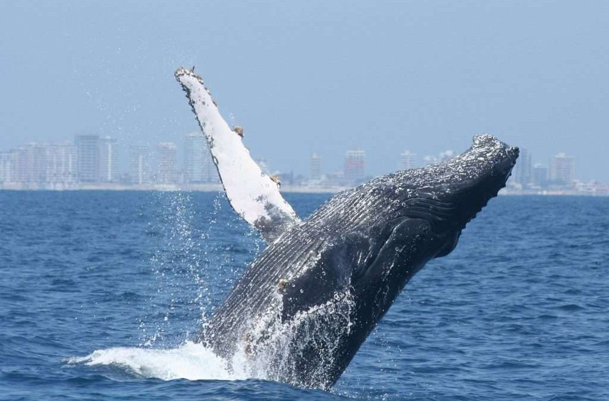
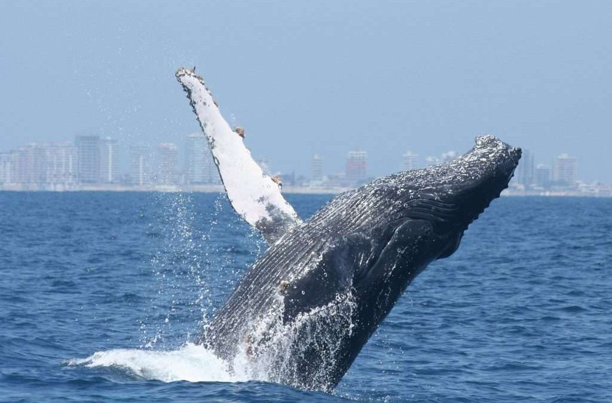

La vida submarina está en constante amenaza: el exceso de pavimentación en la costa, el vertido de nutrientes derivados de la agricultura al océano o el tratamiento inadecuado de las aguas residuales son algunos de los principales causantes de la destrucción de este hábitat. De hecho, en el caso de los arrecifes de coral, aproximadamente un 20% de ellos se han perdido y otro 20% se ha degradado, y no son las únicas víctimas de estas acciones. Esto nos indica que debemos de cambiar nuestro modo de conectar con este hábitat, reduciendo el impacto sobre sus costas y abogando por un turismo sostenible y no intrusivo.
De acuerdo al Informe Estado del plástico 2018 de ONU Ambiente, alrededor de 13 millones de toneladas de plástico son vertidas en los océanos cada año. Contaminación por plásticos en el océano. Entre el 60 y el 80 por ciento de los residuos marinos son plástico. 
